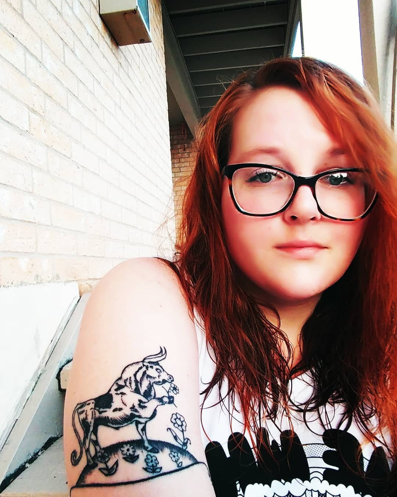

About Me
I was born in Corpus Christi, TX, but quickly became an Austinite, so I consider myself native to Austin. I recently spent about 5 years in Los Angeles, but couldn't help coming back home. I love art, music, and design. Animals are also a big passion of mine. Right now, I've got four dogs, three cats, and a baby in my household.
I graduated from Westlake High School and then attended Texas State University, where I got my BA in Mass Communications. I minored in Business and also became certified to teach at the elementary level, special education, and ESL. I look forward to creating an exemplary portfolio.